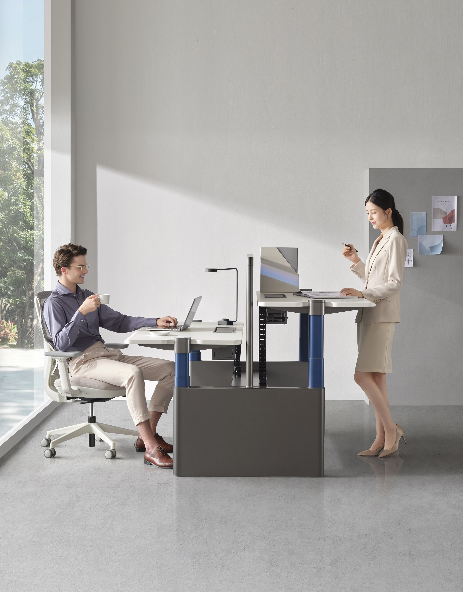

Location: China - Industry: Office

Amid the catalyzing effects of the pandemic and the continuous rise in commercial rents, more and more companies are beginning to rethink the Key Performance Indicators (KPIs) of office space.
With the development of the "Internet Plus" era, Sunon has begun to explore digital hardware as a starting point, introducing a new member to the family - the UP7 Digital Workstation. By integrating information interchange between "people, objects, and spaces", Sunon aims to enhance office space performance.
Technology Empowers Proactive Health
Currently, height-adjustable desks have become a globally recognized health management solution to increase employee happiness. According to a survey by the Society for Human Resource Management, the percentage of companies willing to provide height-adjustable desks in the United States reached 44% in 2017.

However, in actual office scenarios, the attention of sedentary individuals is more focused on work rather than their physical well-being. The inability to maintain a habit of alternating between sitting and standing for extended periods is a common problem.
When users' subjective awareness cannot support their health needs, technological intervention becomes particularly important.
The UP7 digital workstation, with sensors located under the tabletop, acts as its "smart brain". It incorporates three major sensing elements to determine users' sitting and standing behavior based on significant body movements, body temperature, and subtle movements during stillness.
Due to its larger field of view and more sophisticated sensing system, it can overcome the weaknesses of conventional sensors, such as inability to distinguish between human bodies and objects and inaccurate static perception. Based on the sensing results, the UP7 provides warnings through red and green lights switching, dynamic effects, and slight vibrations from the controller, reminding users to stand.
Of course, if users stand up and remain active for a certain period before reaching the prolonged sitting duration, the timer will automatically reset, avoiding disturbance when users return to their workstations and enter a state of focused concentration.
In addition to flexible reminder methods based on personal preferences, the sitting and standing heights are individually set. Users can adjust the sitting duration as they wish, choosing between 30, 45, or 60 minutes.
The digital workstation acts as a personal health assistant, constantly monitoring employees' physical condition, intervening and reminding timely, enhancing employee happiness, and improving office efficiency.
Data Visualization Optimizes Space Value
Statistics show that it is difficult for workstation utilization rates in various industries to reach 80%-100%, indicating that workstation wastage is a common problem.
Additionally, different departments have different usage needs for workstations. By reallocating resources, limited workstations can serve more employees. For example, Accenture allows an average of eight field employees to share one workstation. All these require scientific support from data. However, manual data collection lacks immediacy.
The UP7 digital workstation uses LoRa Internet of Things (IoT) technology to connect workstation devices to the network. Relevant data is transmitted to the enterprise's backend web portal, allowing the company to intuitively understand the company's workstation usage on a single screen.